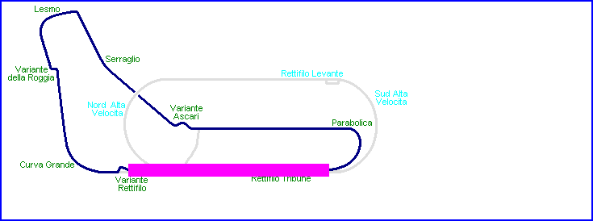
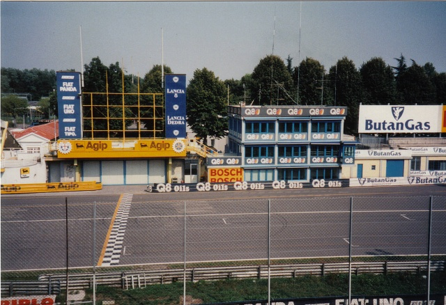
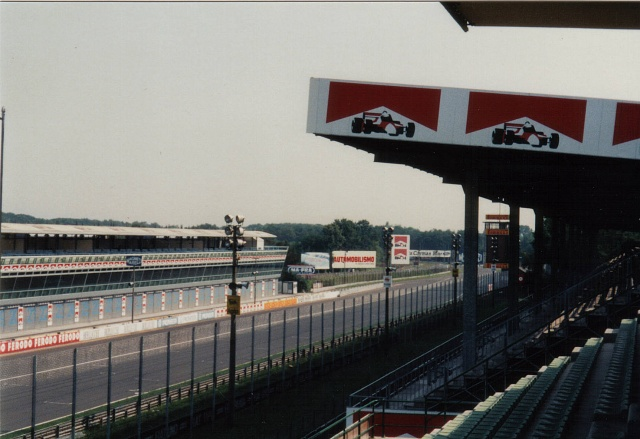
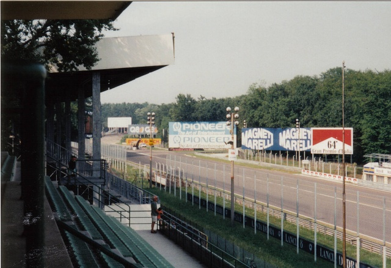
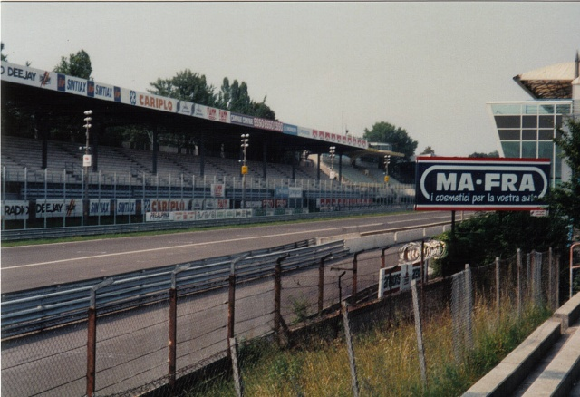

Monza - Pitstraight and Grandstands
|| Contents || Pitstraight & Grandstands | Lesmo, Ascari and Junior circuit | North Banking || Home ||

Highlighted areas on the animated map indicate the location where the photographs
were taken. Click on links above to view photos

Start/Finish line

Start/Finish straight looking back towards Parabolica

Start/Finish straight looking towards the first corner

Start/Finish straight from inside the circuit
Photographs ©Steve Bolt. Reproduced here with kind permission.